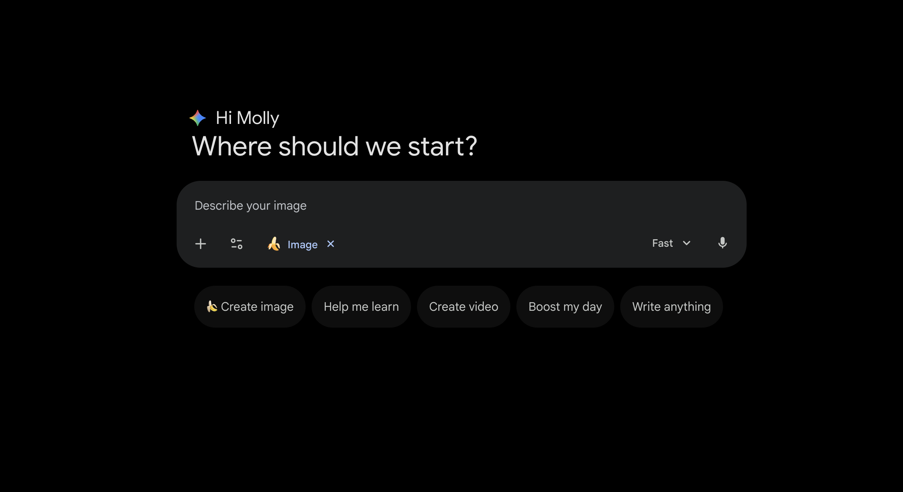
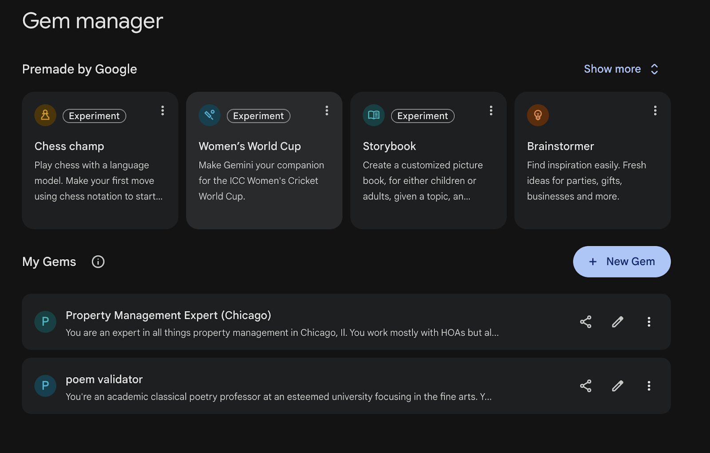
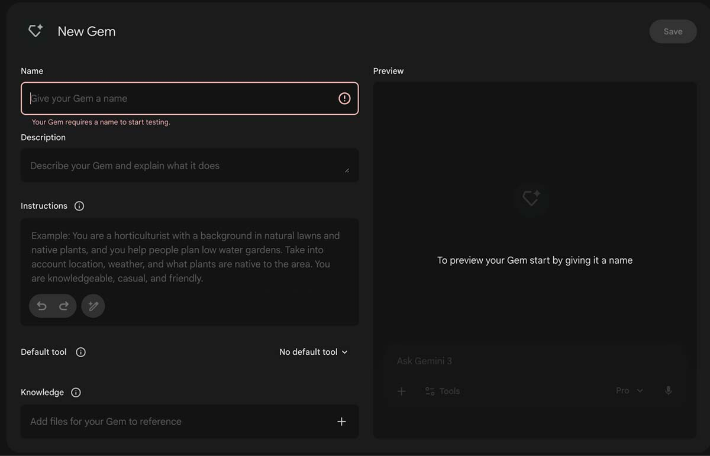
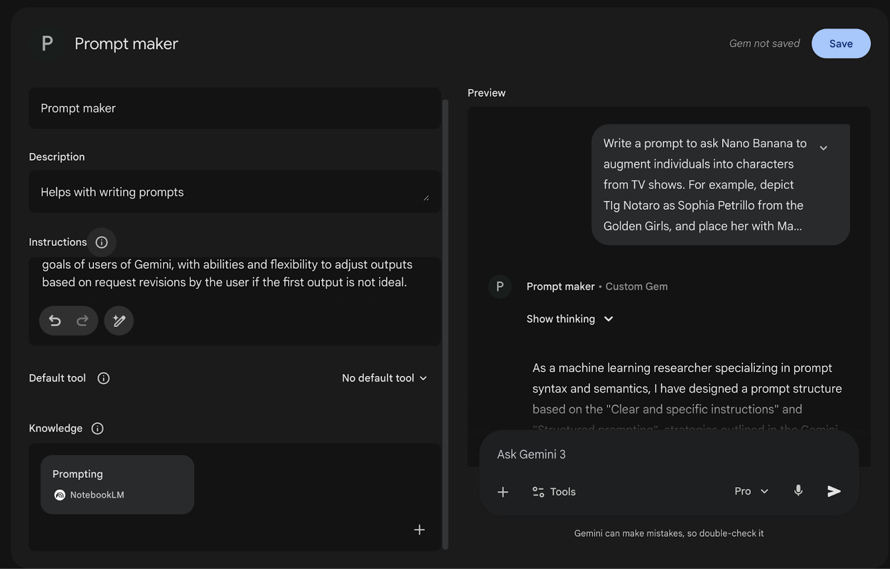
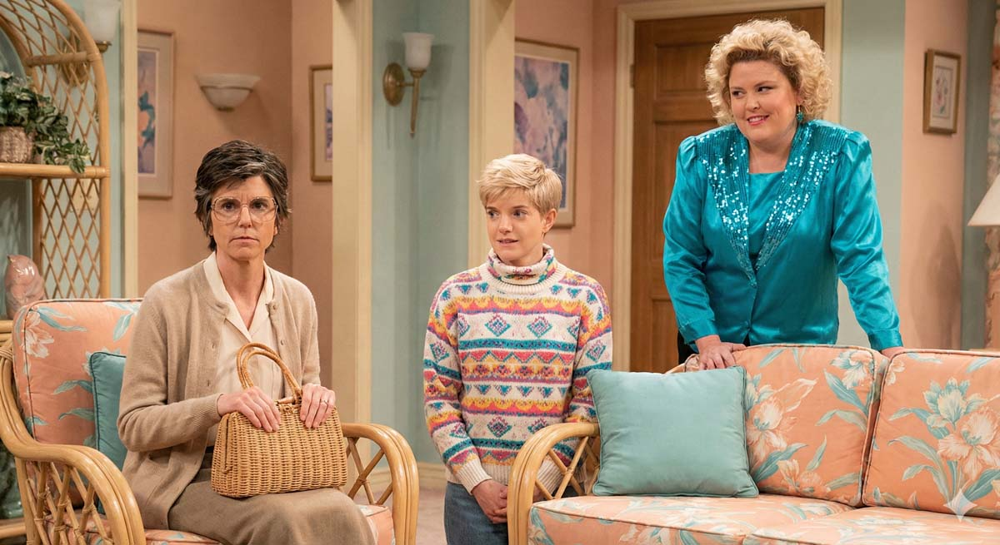

Get what you want with a well-engineered prompt
February 2026
I was listening to one of my favorite pods in the entire universe, Handsome, and in the episode where Will Arnett asks the question (#spoiler), "If you had to live in a sitcom, which would it be?" Fortune replies, "This one is so easy for me." Nope, not "Alf." We find Fortune describing the famously sassy Golden Girls to Mae and Tig, who have never watched a full episode.
As Fortune describes the characters in vivid detail—as if gossiping about the ladies in the next room—Tig swings her arm around and asks "If we were on the Golden Girls, who would be who?"
This is why I love Handsome. The hosts are playful, and conversations wander freely but always circle back to what it means to be human. It's an accepting show—everyone is welcome.
The next morning, I woke up imagining these three as the Golden Girls. Hello, Nano Banana! I cracked open my MacBook Pro, typed in gemini.google.com and paused at the open canvas. I knew what I wanted to create. It was in my head.

What prompt do I start with? I can visualize it in my mind, but how do I get it onto the screen? So many nuances: Tig, Mae, and Fortune becoming Rose, Sophia, and Blanche (Thomas, you got tagged as Dorothy and will remain beautifully invisible—like Snuffleupagus behind the scenes). Trying to use AI responsibly, here's how I approached it.
I decided to create a Gem that specializes in prompts. This would handle my Handsome Pod project and become my prompting agent for future work—just call up my Gem whenever I need help.
Building the Gem

A Gem is like a mini-agent trained to behave a certain way. Think of it as your expert consultant. But before it can help, you need to tell it who it is and how it serves you. I clicked "New Gem."
Staring at the blank form. Gah.

After a quick search, I found solid resources to feed the Gem. I could refine it later—right now I just wanted my Golden Girls image. So I created a NotebookLM filled with prompt guides and added that as the knowledge source.
Prompting the Prompt Maker

After uploading the Notebook, I prompted my "Prompt maker" Gem:
Write a prompt to ask Nano Banana to augment individuals into characters from TV shows. For example, depict Tig Notaro as Sophia Petrillo from the Golden Girls, and place her with Mae Martin as Rose and Fortune as Blanche.
This prompt was gonna slay. 🥷
The Gem delivered—not just the prompt itself, but an introduction explaining why it worked. Since I'd asked the Gem to teach me how to prompt, it provided a full breakdown of its reasoning.
Here's what it gave me:
The Prompt
System Role: Image Generation
Subject: Comedians cast as The Golden Girls
Style: Cinematic, Photorealistic, 80s Sitcom Lighting
Instructions:
Generate a photorealistic group portrait featuring the following three comedians
transformed into specific characters from The Golden Girls. Maintain the facial
features and likeness of the comedians while applying the costumes, hairstyles,
and makeup styles iconic to the characters.
Character Mapping:
1. Tig Notaro as Sophia Petrillo:
- Visuals: Oversized glasses, cardigan, wicker purse
- Expression: Deadpan and observant
2. Mae Martin as Rose Nylund:
- Visuals: High-collared, colorful 80s patterned sweater
- Expression: Innocent, sweet, slightly confused (the "St. Olaf" look)
3. Fortune Feimster as Blanche Devereaux:
- Visuals: Silk blouse, large shoulder pads, sequins
- Expression: Confident, flirtatious, vibrant
Setting:
A 1980s Miami-style living room with rattan furniture, floral print upholstery,
and pastel colors (peach and teal).Why This Works
The Gem explained its approach using prompt engineering best practices:
- Clear instructions: Rather than a vague request, it broke the task into step-by-step components (character mapping, visuals, expressions, setting)
- Entity inputs: It treated the comedians and TV characters as distinct entities, helping the model separate the subject (comedian) from the style target (character)
- Decomposition: Instead of one long description, it separated the request into manageable pieces—Visuals, Expression, and Setting
- Contextual constraints: Adding the Miami living room detail gave the model specific parameters for a cohesive image
The Result
I fed the revised prompt into Gemini, tagging Nano Banana to generate the image:
System Role: Image Generation
Subject: Comedians cast as The Golden Girls
Style: Cinematic, Photorealistic, Medium Shot Group Portrait, 80s Sitcom Lighting
Instructions:
Generate a photorealistic group portrait featuring the following three comedians
transformed into specific characters from The Golden Girls. Maintain the facial
features and likeness of the comedians while applying the costumes, hairstyles,
and makeup styles iconic to the characters.
Character Mapping:
Tig Notaro as Sophia Petrillo:
- Visuals: Oversized glasses, cardigan, wicker purse
- Expression: Deadpan and observant
Mae Martin as Rose Nylund:
- Visuals: High-collared, colorful 80s patterned sweater
- Expression: Innocent, sweet, slightly confused (the "St. Olaf" look)
Fortune Feimster as Blanche Devereaux:
- Visuals: Silk blouse, large shoulder pads, sequins
- Expression: Confident, flirtatious, vibrant
Setting:
A 1980s Miami-style living room with rattan furniture, floral print upholstery,
and pastel colors (peach and teal).Pure magic:

This is what I love about working with AI: I can act on my imagination. It's not about knowing everything upfront. It's about building the right tools to figure things out as you go.